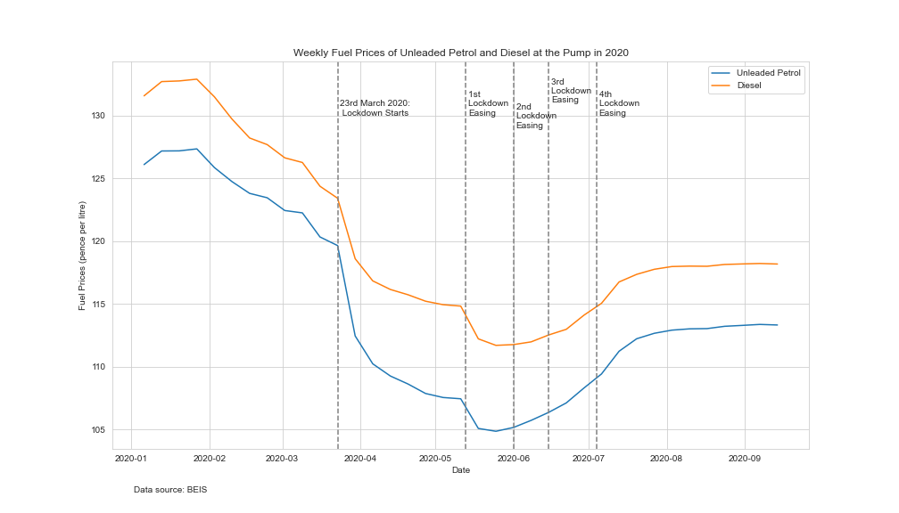
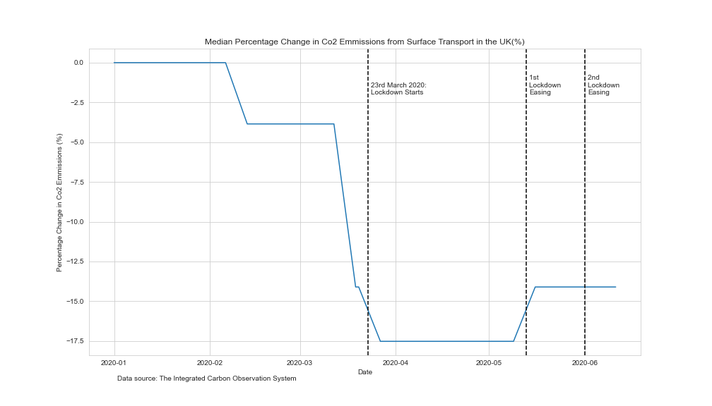

Check out our indepth Jupyter Notebook
As the country was locked down and much of the population were at home only travelling for necessities.
This new need to work from home and stay in place causes the use of different transport methods to change when
measures to protect from COVID-19 were put in place.
Let us explore this and other impacts this may have caused.
In a 2017 Department for Transport report it is highlighted that cars/vans are the usual travel mode to work and the longest time spent commuting is in London. Further as cars are the largest transport polluters even above domestic aviation, the understanding how the use of transport modes changed during lockdown and beyond helps look at the areas we need to work on to reduce our greenhouse gas emmissions and fufill our Clean Air Sustainability Target.
Using data collected by Department for Transport we can look at how the usage of Cars, Rail and Buses compare to an equivalent week or day pre-COVID.
As shown by the two figure above, when lockdown started in the UK there was a sharp decline in the usage of all modes of transport compared
to what we would expect to see normally. As lockdown restrictions eased cars climbed back up to a near normal level but still a small decrease
overall nevertheless. However, even though public transport usage grew as well this was not at the level of cars as well and is not near its
normal levels.
Although, in comparision cycling levels increased 2-fold as lockdown started. This did not last though as cycling dropped back down to normal
levels as lockdown restrictions have been lifted, and may also be partially due to exercise during lockdown.
From this we can see that even though many office workers were remaining at home to work but other workers were gradually going back to work and
people were making more journeys in cars for other reasons. This decline in car usage is seemingly superfical.
Overall, even though there has been a reduction of all vehicles on the road the best sustained reduction would've been best to seen in cars the
largest contributor to greenhouse emmissions, yet positively the levels of car usage is still lower then previously which is moving in a good direction.
Using an Office for National Statistics Experimental dataset for busyness indices,
focusing on the busy city of London, it is interesting to understand how traffic has actually changed on the roads. Even though this is limited to one
city it is a good insight into the traffic in a city during COVID-19 and as Londoners as previously mentioned spent the longest time commuting this would
be valuable insight to see what the effects of people working from home.
This data counts the amount of each mode so would be interesting to see the percentage change from the first day recorded 11th March 2020 to
the day after: Lockdown started, 1st Lockdown Easing, 2nd Lockdown Easing, 3rd Lockdown Easing and 4th Lockdown Easing.
From the start of Lockdown the levels of cars dramatically decreases and then rose again as lockdown restrictions were lifted again, however,
still at a lower level than normal. This mirrors the general trend show in the 'Use of Transport Modes in the UK since 1st March 2020' figures.
Further the levels of of buses has decreased but not at the same rate as cars and has only seen small fluctuations and has not moved back to
normal levels. Comparing this to the 'Use of Transport Modes in the UK since 1st March 2020' we can see that Transport for London Buses usage
also dropped justifying these results.
More interestingly the levels of motorbikes has increased. This could be due to the increase in food deliveries that people were getting to
there home, or could be favoured over other transport modes.
The levels of pedestrians and cyclist dropped the most and has stayed at the biggest percentage decrease. Following on from the increase in
motorbikes, London had a larger level of lunches being delivered to offices (easiest on bikes) which still remains low due to offices remaining closed.
Similarly to previous analysis, even though there is a a general decrease in cars and buses, a sustained decrease in car usage would be greater
impactful but this is still a possibililty as there is a reduction. More worryingly, the increase in motorbike usage may counter balance other
modes of transport, an increase is always worrying to see if it emmits emmissions. The large drop in office usage may be the reason why bus and
car levels have dropped in a heavily corporate city indicating work from homes benefits to road busyness.
There are many effects that could be found that have resulted from this droping in car and other transport mode usage, two that can be explore are: Fuel prices and Co2 Emmissions
Looking at the BEIS published road fuel price statistics we can see the retail price for petrol and diesel in the UK. This would be impacted by the demand from users of fuel which decreased during the UK (other factors also apply).
From before lockdown started the price at the pump of both Petrol and Diesel was reducing, This further reduced as Lockdown started and has been slow to rise. A statement from the Petrol Retailer Association states that many petrol stations will have to close as fuel sales dry up. Here also states: "Petrol consumption was down by 75% and diesel by 71% which indicates that the Government’s “stay at home” instructions to combat the coronavirus pandemic are being heeded". Showing that the demand for fuel most definitely dropped indicating the reduced usage of cars in the lockdown period.
As less vehicles were on the road during the lockdown period how did the levels of Co2 emmissions change due to this surface transport. Using data from The Integrated Carbon Observation System which reported a teporary reducation in Co2 emmission how much of this was due to surface transport in the UK.
From the Figure above we can see a reduction of Co2 emmission around the start of Lockdown in the UK highlighting that the reduction of cars and other vehicles may have had an impact in reducing the amount of greenhouse gases emitted in the UK. This is an important indication that reducing vehicles on the road will infact reduce emmissions and possible what the UK should push to see.
As Lockdown eases we can see an increase in the usage of cars again and this has not been seen in public transport, further the reduced fuel prices
and the possibility of crowded public transport may lead to more people using their cars more often.
People remaining at home not travelling to work, especially seen in office workers, has highlighted the impact commuting plays in our road transport
levels. This reduction that lockdown induce showed the drop in levels of emmission that is gained from reducing our vehicles on the road. Further as
office workers stay working from home and possible in the furture remain working from home in some capacity, the country could see a somewhat lower
level of vechiles on the road and in turn reducing emmissions.

this is an explanation
this is an explanation
this is an explanation
this is an explanation
We need the governement to make public transit safe and not push people away from it completely.
This could be a perfect time to expand the public transport in the UK to host larger capacity so we firstly can introduce more saftey and space
to limit the spread of COVID-19 as well as future-proofing our public transport network. Further as office workers still mostly remain working
from home for the moment it give more opportunity to do so soon.
Additionally the delaying of Clean Air Zones
in the UK could delay the reduction of emmissions and car usage we saw in London from happening in other major cities and need to ensure this does take
place and not delayed further. Transport emmission are particularly important as Government
and Industry reports have highlighted that transport is the largest contributors
to our greenhouse gas emmissions. Further, road transport has also been reported to be the main source of air quality pollutant emissions from transport
by the Departement of Transport.
As highlighted above the reduction of cars and other vehicles on the road did lead to a decrease in Co2 emmissions a greenhouse gas. This idicates the
push to decrease usage of cars and a greater push to public transport as this is the best way to allow people to travel in a fast and clean way.
Therefore in order for the UK to meet its Clean Air Sustainability target the make up of our transport modes need to be looked at.
The Government plans to ends the sale of new conventional petrol and diesel cars and vans by 2040, however this does not push people to more energy efficient cars such as electric and hybrid cars just second-hand petrol and diesel cars which may not be better for the environment. There needs to be a push and incentives toward purchasing efficient vehicles as if public transport is not improved in the drastic way, cars will remain essential to peoples lives.
{kind=link}
{kind=link}